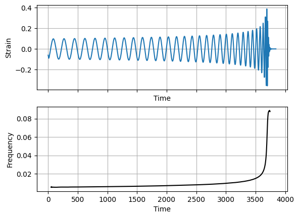
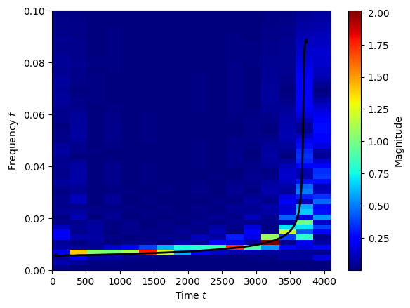
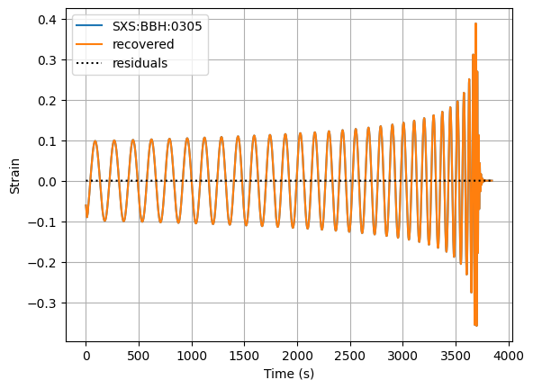

Getting Started
To run this notebook you will first need to download the GW data,
python download_SXSwaveform_data.py
[11]:
import numpy as np
import matplotlib.pyplot as plt
import WDM
Here’s an example GW waveform. We also compute the frequency of the signal as a function of time.
[12]:
data = np.loadtxt("../data/waveform_SXS:BBH:0305_Reh22.txt")
time = data[0]
re_strain = data[1]
im_strain = data[2]
frequency = np.diff(-np.unwrap(np.atan2(im_strain, re_strain)), prepend=0) / np.diff(time, prepend=0) / (2*np.pi)
fig, axes = plt.subplots(nrows=2, sharex=True)
axes[0].plot(time, re_strain)
axes[0].set_xlabel('Time')
axes[0].set_ylabel('Strain')
axes[0].grid()
axes[1].plot(time[100:-200], frequency[100:-200], 'k-')
axes[1].set_xlabel('Time')
axes[1].set_ylabel('Frequency')
axes[1].grid()
plt.show()

[13]:
current_length = len(time)
print(f"Current length of time series: {current_length}")
Current length of time series: 7688
Let’s take a wavelet transform of this using \(N_f=512\) frequency slices. The wdm object will handle the wavelet transform. We need to pad the signal so that it’s length is an even multiple of this number
[14]:
dt = np.mean(np.diff(time))
Nf = 512
N = WDM.utils.next_multiple(current_length, 2*Nf)
wdm = WDM.WDM.WDM_transform(dt=dt, Nf=Nf, N=N, q=8, calc_m0=True)
re_strain_padded, mask = WDM.utils.pad_signal(re_strain, N)
im_strain_padded, mask = WDM.utils.pad_signal(im_strain, N)
print(f"Padded length of time series: {N}")
Padded length of time series: 8192
We can print the wdm object to see some key information about the wavelets we are using.
[15]:
print(wdm)
WDM_transform(Nf=512, N=8192, q=8, d=4, A_frac=0.25, calc_m0=True)
self.Nt = 16 time cells
self.Nf = 512 frequency cells
self.dT = 256.0 time resolution
self.dF = 0.001953125 frequency resolution
self.dt = 0.5 time series cadence
self.df = 0.000244140625 time series fft frequency resolution
self.K = 8192 window length
Take the forward discrete wavelet transform (dwt). This transforms from the time domain to the time-frequency domain.
[16]:
w = wdm.dwt(re_strain_padded)
We can plot these coefficients in the time-frequency plane. The black line shows the frequency obtained directly from the NR waveform. Note, this doesn’t look as beautifully smooth as the oversampled periodograms we are used to looking at, but this is what we want for data analysis.
[17]:
fig, ax = WDM.plotting.time_frequency_plot(wdm, w, part='abs', scale='linear')
ax.set_ylim(0,0.1)
ax.plot(time[100:-200], frequency[100:-200], color='k', lw=2)
plt.show()

Let’s take an inverse discrete wavelet transform (idwt).
This transforms back into the time domain. We do this to check we can recover the original signal. We will use the mask to get the output back to the original shape.
[18]:
re_strain_recovered = wdm.idwt(w)[mask]
residuals = re_strain_recovered-re_strain
print(f"Max residual: {np.max(np.abs(residuals))}")
Max residual: 3.08801649615692e-14
[19]:
fig, ax = plt.subplots()
ax.plot(time, re_strain, label='SXS:BBH:0305')
ax.plot(time, re_strain_recovered, label='recovered')
ax.plot(time, residuals, 'k:', label='residuals')
ax.set_xlabel('Time (s)')
ax.set_ylabel('Strain')
ax.legend()
ax.grid()
plt.show()

The operations for the forward and inverse discrete wavelet transform are vectorised for multiple transforms to be performed at once in batches.
We demonstrate this here by transforming both + and \(\times\) components of the GW signal (batch size=2).
[20]:
GW_signal_padded = np.vstack((re_strain_padded, re_strain_padded))
print(f"Time series shape = {GW_signal_padded.shape}")
GW_w = wdm.dwt(GW_signal_padded)
print(f"Wavelet coefficients shape = {GW_w.shape}")
GW_signal_recovered = wdm.idwt(GW_w)
print(f"Recovered time series shape = {GW_signal_padded.shape}")
Time series shape = (2, 8192)
Wavelet coefficients shape = (2, 16, 512)
Recovered time series shape = (2, 8192)
[ ]: